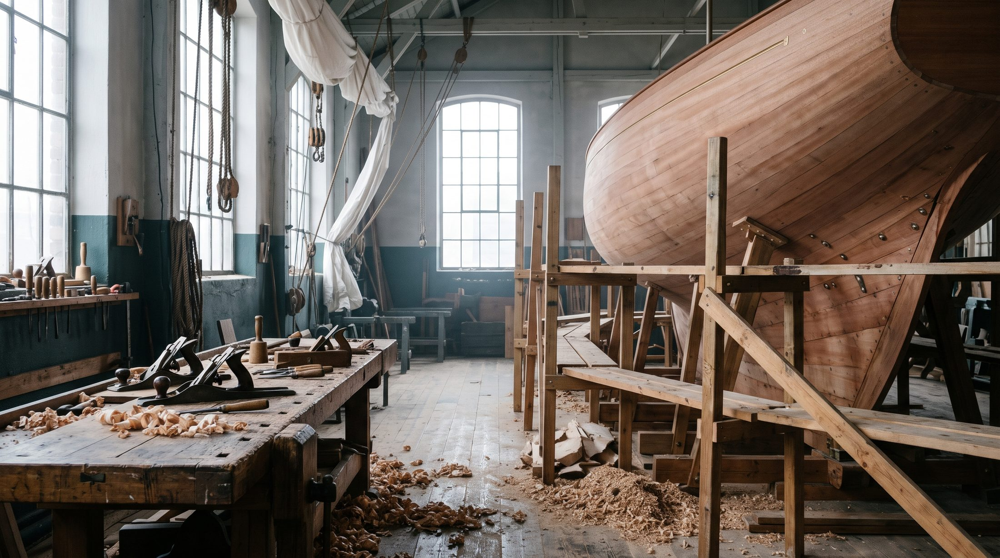
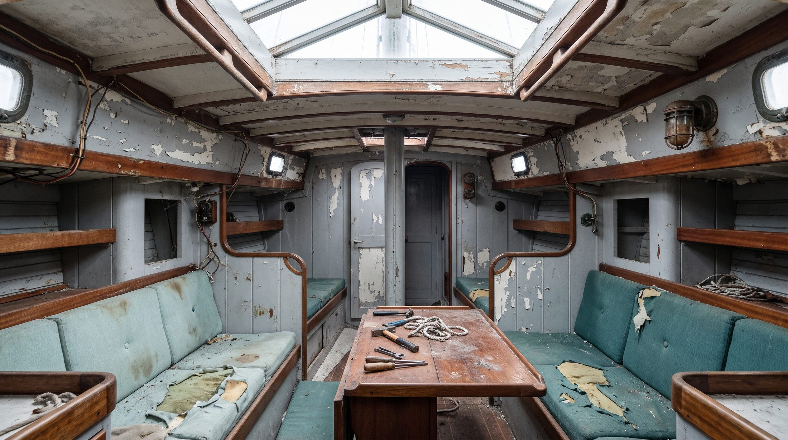
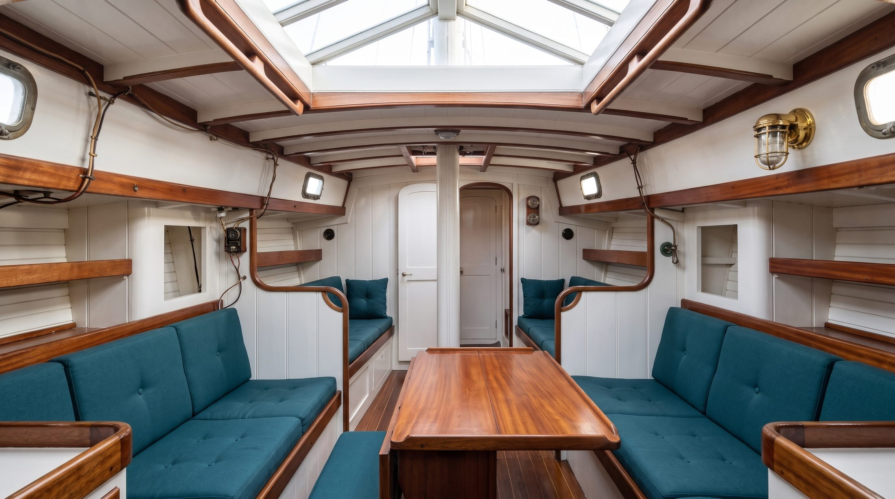
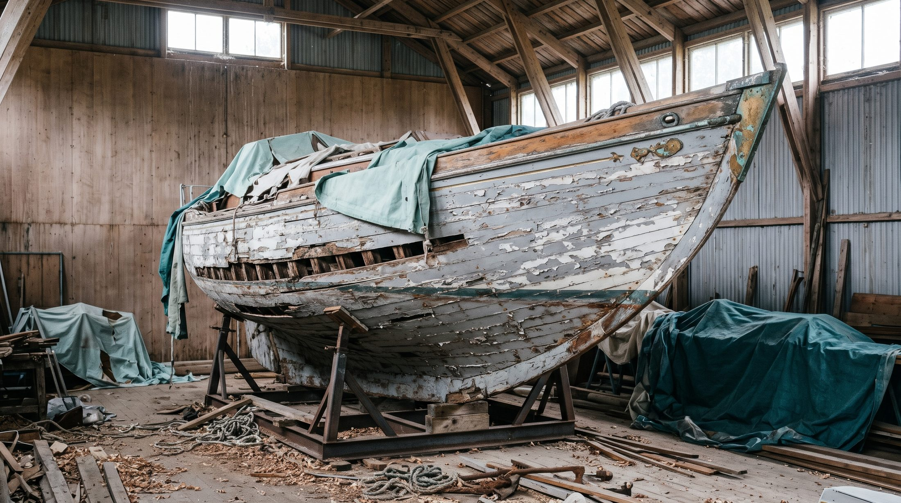
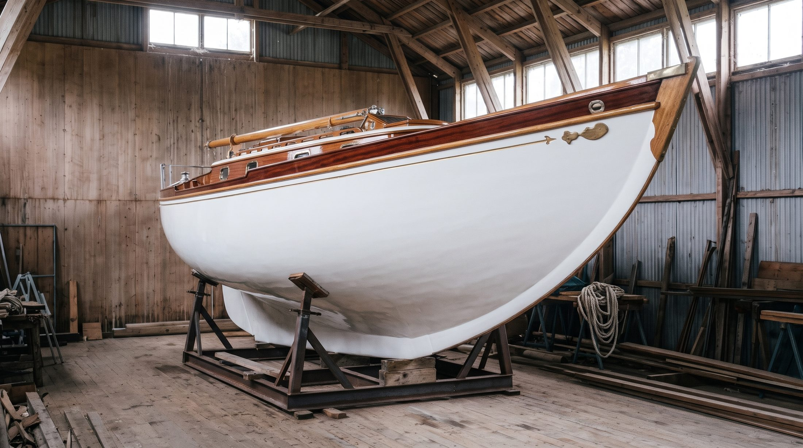
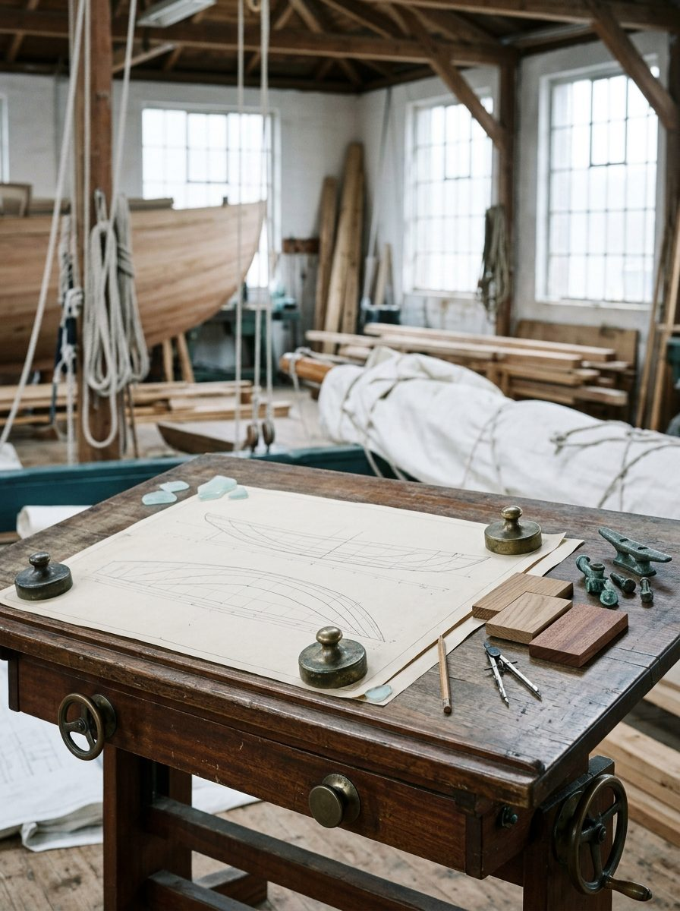

Save a tired hull with Halyard and set sail in it again
From the first survey to the first charter week, we lead each step of a restoration.
Discover
Restoring a yacht means revealing the lines it was drawn with
A saloon stripped bare and rebuilt, west coast


The interior of a 1948 ketch had been left open to the rain for six winters. We kept every bulkhead that could be kept, rebuilt the rest in mahogany and gave the cabin back its skylight.
A racing hull from the thirties, Baltic shore


Found under a tarpaulin behind a farm, this double-ender needed new planks, new fastenings and a great deal of patience. She now sails twelve charter weeks a year.
Our four trades in the shed
Survey & history
Moisture readings, fastenings, drawings and provenance, gathered into one honest report before a single plank is lifted.
Lines & layout
Our draughtsman redraws the interior so that a narrow hull gives berths, light and stowage without losing its character.
Shed & shipwrights
Our crew leads the whole site: planking, decks, rig, engine, paint, and the long list no one sees once she floats.
Canvas & fittings
Sails, bronze, linen and lamps chosen to belong to the yacht, and to survive salt, sun and guests.
One approach, from the first plank to the launch
A restoration is a long project with many hands. We stand at each stage, so the budget holds and the yacht you imagined is the yacht that floats:

Season care:
steady and always afloat.
A restored yacht is only as good as its next winter. An annual plan keeps the work we have done, spreads the cost and leaves you with a yacht that is ready at two days’ notice. It suits owners who want to sail, not to schedule.